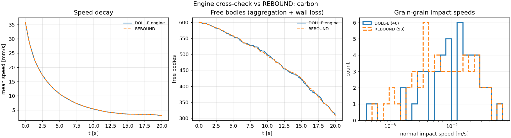

Run the simulator in your browser
The real DOLL-E Python code running locally in your browser (WebAssembly). Nothing is uploaded. Change any parameter or material property, run the pre-flight check or a full simulation, and verify the physics.
Edit material properties (overrides the built-in database)
Edit any value and it is applied to the run. Surface energy γ is the most uncertain number: it is what the flight measures. Units: ρ kg/m³, E GPa, γ J/m², φ eV, p_y GPa, k W/m/K.
Advanced: edit the full configuration JSON
Every option of the simulator (see the README). The form above writes into this; press Apply JSON to use your edits (fields the form does not show are kept).
These benchmarks test the simulator against analytic solutions and conservation laws. They run the real code in
your browser, so you can check it yourself. They are the same checks as python -m dolle_sim verify.
| Check | What is tested | Result | Criterion | s |
|---|
Cross-check against REBOUND
The same chamber run in this engine and in the independent REBOUND N-body code
(desktop run; REBOUND is a C library that does not run in the browser).
Reproduce with python -m dolle_sim rebound-check configs/rocksat_x_carbon_vs_silica.json --duration 20 --max-grains 600.

What runs here
The full simulator (dolle_sim) runs on Pyodide, which is CPython compiled to
WebAssembly, with numpy and scipy. The physics is identical to the desktop version. Two speed settings differ: there is no
numba JIT, and contacts are integrated with 100 instead of 300 sub-steps per impact, which changes outcomes by < 0.4%.
Keep runs to a few hundred grains and a few seconds. For the full 2000-grain, 120 s flight, run it locally.Reading the results
Truth is the sticking threshold from the exact 3D normal impact speeds of free single grains. Stereo is what two orthogonal cameras would measure, 1 camera what a single view would. Impacts onto grains stuck to a wall (twice the effective mass) are reported separately.Runtime
Loading takes ~10–20 s the first time (cached afterwards). The default run (2 × 200 grains, 4 s) takes about a minute on a laptop. Time grows roughly with grains × seconds and with the number of wall impacts.Save and share
Download config saves every setting as JSON. Upload it here again, or run it locally:python -m dolle_sim run my_config.json. Each result card has CSV downloads of every collision.